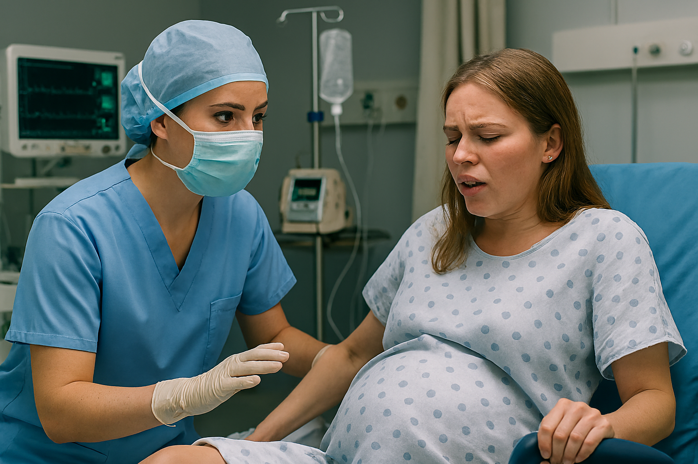

O curso de Enfermagem prepara profissionais para atuar de forma completa na área da saúde, desenvolvendo competências na promoção, prevenção e recuperação da saúde. Durante a formação, o estudante vivencia experiências práticas e teóricas que contribuem para a construção de um profissional humano, ético e qualificado.
A graduação também proporciona contato com diferentes áreas de atuação, permitindo ao aluno descobrir sua vocação dentro da enfermagem e se destacar no mercado de trabalho.
Mais de 90% dos nossos alunos são contratados antes mesmo de concluir o curso.
O curso oferece uma formação completa com foco na prática profissional e na preparação para os desafios reais da área da saúde.
Infraestrutura completa com equipamentos de última geração para simulações realistas.
Corpo docente formado por mestres e doutores atuantes no mercado.
Convênios com mais de 50 hospitais e unidades de saúde.
Parcerias com universidades na Europa e América do Norte.
Venha fazer parte da nossa história e construa uma carreira de sucesso na enfermagem!
🚀 Quero saber mais🔗 Acesse: faculdadesaovicente.edu.br
O profissional de enfermagem pode atuar em diversas áreas da saúde, contribuindo diretamente para o cuidado e bem-estar da população.
Atuação direta no cuidado ao paciente em ambientes hospitalares, realizando procedimentos, acompanhamento e assistência contínua.
Trabalho em postos de saúde, campanhas de vacinação e programas de prevenção, promovendo saúde para toda a comunidade.
Atuação em unidades de terapia intensiva, com monitoramento constante e cuidados especializados a pacientes em estado crítico.
Cuidados prestados na residência do paciente, garantindo conforto, acompanhamento e qualidade de vida.
"Melhor decisão da minha vida! Hoje atuo na UTI de um hospital referência e agradeço todos os dias pela formação que recebi."
"Os professores são incríveis e a infraestrutura dos laboratórios me preparou para os desafios reais da profissão."
"Consegui estágio no segundo semestre e já fui contratada antes mesmo de me formar. O curso abriu todas as portas para mim!"
O curso tem duração de 4 anos (8 semestres), com aulas teóricas e práticas desde o primeiro ano.
As mensalidades começam em R$ 890,00 com descontos para pagamento à vista. Oferecemos bolsas pelo PROUNI e FIES.
Sim! Temos convênios com mais de 50 hospitais e unidades de saúde para estágios supervisionados obrigatórios.
Sim! Nosso curso tem nota máxima (5) no MEC e é referência na região.